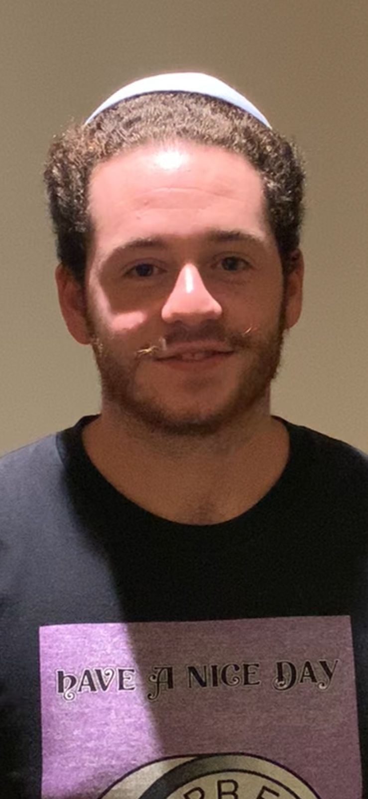

Mike Kattan hails all the way from the city of Sao Paulo in Brazil. He is soon to become a world-class chess player.
Having studied in 4 NYU campuses, Mike brings late-night chess experience from all over the world, and has testimony that chess indeed connects people across cultures and language barriers. As a chess grand master, even Magnus Carlesen fears Mike's moves. If you run into him at a chess match, approach at your own risk.
Late Night Chess
The Film is Finaly Out!.
Late Night Chess is a film that explores how real connections between people are made through late night chess games. Learn the smartest moves in chess and enjoy this piece of art with its outstanding performances.
Joao Bosco is a Brazilian from the city of Brasilia, soon to become an economist. One of the best ranked individuals in the NYU Abu Dhabi chess ranks, he practices his moves daily in late matches with Mike.
He often goes to the gym, as can be seen, and is currently starting his acting career on the side.
Gladly, he accepted the offer to star in this feature film.